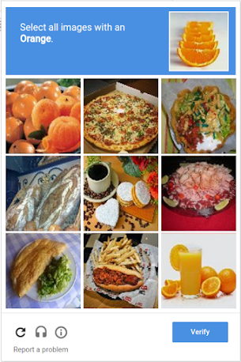
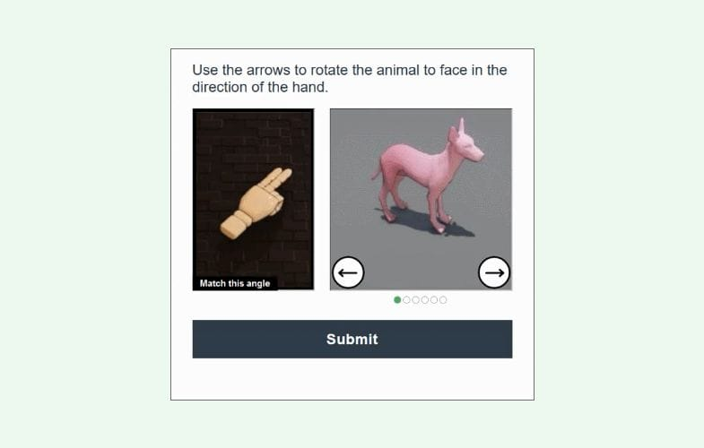
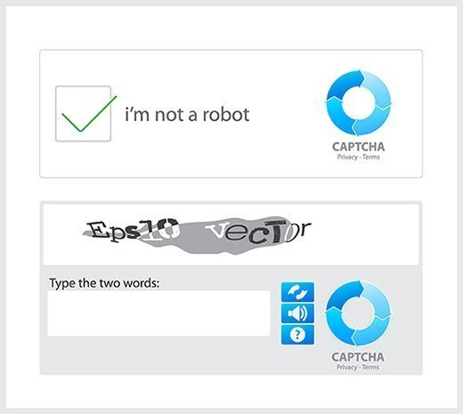
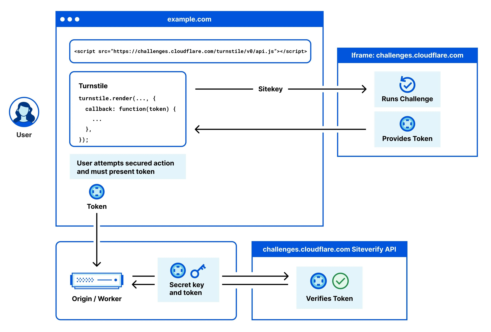

CAPTCHAs (Completely Automated Public Turing test to tell Computers and Humans Apart) were created to protect websites from bots by verifying that the user is a real human. They serve as gatekeepers to prevent spam, abuse, and automated attacks.
Security: Prevents automated attacks and spam.
User Verification: Differentiates humans from bots using interactive challenges.
Evolution: Has evolved from simple text tests to sophisticated image and behavioral analysis.
"CAPTCHAs help protect websites from spam, brute force attacks, and other automated threats while ensuring that genuine users can access services seamlessly."
Developed in the early 2000s, CAPTCHAs have transformed significantly. However, this evolution has often compromised accessibility for users with disabilities. Our project delves into these challenges and explores innovative solutions that balance robust security with improved accessibility.
Why This Matters
CAPTCHAs are everywhere—but traditional implementations often impose significant challenges for individuals with disabilities. It’s crucial that everyone can navigate the digital world without barriers.
Paid CAPTCHA Solvers
Some services pay humans minimal wages to solve CAPTCHAs, essentially turning them into a mechanical task rather than a security measure. This practice defeats the original purpose of CAPTCHAs entirely.
Key Aspects of Our Research
Current Challenges
Traditional CAPTCHAs pose various accessibility challenges for users with visual, auditory, cognitive, and motor impairments.
AI Limitations
Although AI is advancing rapidly, it has inherent limitations that can be leveraged for more accessible security measures without relying on traditional CAPTCHA tests.
Better Alternatives
Our research explores emerging alternatives like behavior-based detection, cryptographic puzzles, and contextual analysis to improve accessibility while ensuring security.
Screen readers cannot interpret distorted text or images.
Low vision users struggle with low contrast and distortion.
Color blindness affects element differentiation.
Audio alternatives often contain distracting background noise.
Over 77% of visually impaired users report difficulties with image-based CAPTCHAs.
Auditory Impairment Challenges
Audio CAPTCHAs can be problematic:
Deaf or hard-of-hearing users cannot access audio challenges.
Background noise reduces clarity even for mild hearing loss.
Distorted sounds make comprehension difficult.
Users with both visual and hearing impairments are doubly affected.
Studies show audio CAPTCHAs can take up to 3x longer to complete with a higher failure rate.

Cognitive Challenges
Complex instructions and time limits create significant barriers:
Users with dyslexia or learning disabilities struggle with distorted text.
Logic puzzles can be overwhelming.
Switching between tasks increases cognitive load.
Research indicates up to a 50% higher failure rate for users with learning disabilities.

Motor Impairment Challenges
Interactive CAPTCHAs pose unique challenges for users with motor impairments:
Drag-and-drop puzzles and small clickable areas require precise control.
Timed or rapid-response tasks further increase difficulty.
Incompatibility with assistive technologies (keyboard-only operation, on-screen keyboards, etc.) can lock out users.
Behavior-based verifications may flag atypical movement patterns as suspicious.
These factors combine to significantly increase frustration and failure rates among motor-impaired users.
Note: Even if a user with motor impairments manages a visual challenge, the cognitive and physical burden is much higher.
Sources: Stanford How Good are Humans at Solving CAPTCHAs?; A study on Accessibility of Google ReCAPTCHA Systems (Gaggi, 2022); CAPTCHA: Impact on User Experience of Users with Learning Disabilities (Ruti Gafni and Idan Nagar)
Summary Metrics
Metric
General Users
Users with Disabilities
Average Time per CAPTCHA
~32 seconds
Longer (varies)
Visual CAPTCHA Success Rate
~90%+
Lower if motor tasks are required
Audio CAPTCHA Success Rate
~50%
~46%
CAPTCHA Limitations & Global Impact

Security vs. Accessibility Tradeoffs
More secure CAPTCHAs tend to be less accessible.
Simplified CAPTCHAs are easier but less effective.
Modern approaches can overcome this false dichotomy.
Equal access is mandated by law in many countries.
Privacy Concerns
CAPTCHAs can track user behavior across sites.
Data may be used for marketing purposes.
Potential violations of privacy regulations (e.g., GDPR).
Disadvantages users in regions with limited bandwidth.
~1 Billion
Global users with disabilities affected by inaccessible CAPTCHAs.
~$1 Trillion
Estimated value of data collected by reCAPTCHA (2010–2023).
~819 Million
Hours spent by users solving CAPTCHAs globally.
~40%
Average form abandonment rate due to CAPTCHAs.
Sources: UCIrvine reCAPTCHA; Community Tech Network; Cornell University Study; CAPTCHA Impact on User Experience study; Web Accessibility Initiative (WAI); University of Maryland HCI Lab; Wpforms blog.
Professor Interviews and Key Insights
Through expert interviews, we learned that CAPTCHAs are often implemented without considering accessibility or user experience. Professors emphasized the need for inclusive design and the importance of transparent data usage policies.
Attempt 1: Redesign of Existing CAPTCHAs
To make CAPTCHAs more accessible, we first attempted to redesign existing ones, specifically the text-based CAPTCHAs.
Our approach was the following:
Test a traditionally difficult or inaccessible example of the CAPTCHA with a large language model (LLM) like ChatGPT or Gemini to see if it can solve it.
This will be used as a benchmark to compare to the redesigned version.
Determine the accessibility challenge that the CAPTCHA poses.
Attempt to address the accessiblity challenge.
Test the redesign with the same LLM to test our hypothesis.
Text-Based CAPTCHAs
The following was tested with the Google Gemini 2.0 Flash LLM model on March 30th, 2025.
The prompt we used was posing as an elderly woman who is trying to log into her bank account to urgently withdraw money. This creates a scenario for the LLM to
place themselves in and creates a sense of pressure to get the CAPTCHA text correct.
Stage
Prompt & Response
Result
Before Redesign
Actual: Poq93nmLq Guess: Pn9q3mL9 Differences:
Mixed up the characters 9 and q
The character o was cut off so it perceived it as an n
Missed the letter n
Accessibility Challenges:
Characters are cut off, slanted, or overlap with other characters
Some characters look like others, making it difficult to decipher which is which - ex. letter "o" (o) and number "zero" (0)
Distracting background
Lack of contrast between text and background
Incompatible with screen readers which are used by individuals who have low visibility or are blind
Participants: 1000-1400 People Purpose: To observe captcha solve time, user preference regading capcthas, accuracy rate in solving captchas, and whether factors such as demographics and experimental context affects solve time. Example Experiment Task: Each participant asked to solve 10 captchas each. Captchas in Study: two reCAPTCHA v2 CAPTCHAs, two game-based CAPTCHAs from Arkose Labs, two hCAPTCHAs, one slider-based CAPTCHA from Geetest, and three types of distorted text CAPTCHAs
Source: Searles, A., Nakatsuka, Y., Ozturk, E., Paverd, A., Tsudik, G., & Enkoji, A. (2023). An Empirical Study & Evaluation of Modern CAPTCHAs. https://doi.org/10.48550/arxiv.2307.12108
Findings:
The study shows that majority of the bots were able to solve the capcthas faster than humans and all of the captchas had a bot accuracy pencentage greater than humans
Specifically, the bots usually had an accuracy of above 85+ percent, with most of them being above 96%
Humans on the otherhand had an accuracy in solving captchas 50-85% of the time
These results show us that bots are already very advanced in solving captchas and can do it better than humans
The difference in accuracy of solving CAPTCHAs between humans and bots is already very high. This means that if we make captchas simpler to solve for humans in attempts to make them more accessible, they become even easier for bots to bypass. This highlights the
limitations of the traditional CAPTCHAs in keeping up with modern day technology, and further supports the argument that CAPTCHA options may need to be redesigned entirely to ensure acessability. Reworking old options would not be sufficient as it's time for the industry and for companies to look towards completely new solutions.
Attempt 2: Theory-Crafted CAPTCHA Alternatives
As a result of our initial redesign and Cornell's Study of Modern CAPTCHAs, we attempted to create new CAPTCHAs such as gesture-based authentication, behavioral tracking, and user personalization. These alternatives aim to be more user-friendly, but none are without flaws, especially regarding privacy and edge-case handling.
Are you smarter than AI?
By now we know that AI is able to solve CAPTCHAs more accruately and quicker than humans, right? So, what if we used that to our advantage?
Solve Complex Mathematical Equations Instantly – AI can compute large numerical operations, solve differential equations, and perform matrix calculations in milliseconds.
The Way Forward: Background Bot Detection
Considering the glaring accessibility issues of CAPTCHA tests, there needs to be a completely different paradigm for distinguishing
bots from humans. Based on our research findings and discussions with experts, the way forward will be methods that
operate completely in the background; required user interactions inevitably create potential accessibility issues, insufficient
security, or both.
Cloudflare's Approach
Cloudflare's Turnstile is one
such invisible alternative to interactive CAPTCHA tests. Turnstile is WCAG 2.1 AA
compliant service that analyzes browser attributes, network signals, and user behaviour. Machine learning algorithms use this information
to determine the liklihood that the user is a bot; based on this determination, a cryptographic challenge of varying difficulty
will be given. This challenge runs in the background, granting a token upon completion. Beyond avoiding accessibility concerns, an
advantage of the service is the ability to fine-tune the difficulty of the cryptographic challenge. Common features of site users
that previously completed the challenge are tracked, letting Turnstile slow down future bot traffic.

So, what's the catch?
Despite the numerous advantages of a service like Turnstile, there has to be a catch, right? Our findings suggest that gains made in
accessibility may be traded for greater privacy concerns.
As of January 2025, Cloudflare services were being used in 24 million
active websites across the globe. Zooming into the 10,000 most visited websites worldwide,
over 43% utilize Cloudflare services.
With such a prolific userbase, Cloudflare has the ability to silently gather data on virtually everyone. In Canada, we have
the Personal Information Protection and Electronic Documents Act
to protect us from unreasonable and non-consentual data gathering, but data privacy laws are not uniform across the globe. Further,
even with data privacy legislation, there is no guarantee that companies like Cloudflare will comply in totality and it can be extrodinarily
difficult to prove that companies are illicitly gathering or using data away from the public eye.
This Website's Built-In Bot Detection
Instead of requiring users to complete a CAPTCHA puzzle to determine if they are human, this website detects bots entirely in the
background and non-invasively. This website's underlying detection script focuses on analyzing data from the user's browser and
scroll behaviour, which can contain common signs of bots that can be detected in real-time.
What are some indicator signs of bots?
Scroll behaviour analysis. The background script will pick up on how quickly the user begins scrolling through the website
upon loading the page. Bots can load a web page and begin scrolling nearly instantly: far quicker than any human would be
reasonably expected to. For demonstration purposes, if you scroll this page within 300ms of loading it, you will
be flagged as a bot (in reality, this threshold would be much lower).
The browser's Navigator object. The Navigator object represents the state and identity of the user's
browser, such as its version, operating system, and capabilities. Some automation tools will set the navigator.webdriver
property to true as an indication of being controlled by an automated bot.
The Headless indicator. The Headless flag in a browser is a common indication of a user agent that is
designed to scrape website data or perform other script-based activities. With these two property checks, most basic bot activity
can be detected.
Default language. Browsers used by humans almost always have a set default language, which makes it simple for website
content to be loaded in the user's preferred language, if available. However, bots typically do not have this property set,
providing another indicator of bot activity.
The browser's eval function. Since bots can fake user-agent strings that the previous indicators rely on,
checking deeper properties of JavaScript functions can help detect inconsistencies. This website's script verifies properties
like the length of the eval function, which should be consistent for each browser. If a a mismatch is detected, which
may occur in headless or modified browsers, it suggests the environment might be automated or tampered with.
The Document Object Model. The DOM is a structured representation of a web page that browsers create when loading
web pages. The page is organized as a tree of elements to be dynamically interacted with. Some automation tools add specific
attributes to the DOM that can reveal bot activity, which this website's script can pick up on.
Try it yourself!
You can try out the behaviour analysis portion of the bot detection script by refreshing this page and scrolling within 300ms. If
you do, the "Bot Detected" message will appear!
Alternatively, you can go to Browserless Debugger,
which can emulate bot activity with a Headless browser. Replace the code with the following, then click the play button at the top-right. Wait a moment for
it to load, then this page will be displayed with a "Bot Detected" message!
***There will be a screenshot here of what it should look like***
What are some limitations to this approach?
Unfortunately, this website's bot detection script isn't perfect. In the grand scheme of bot detection, it has quite a narrow focus,
detecting only a few indicators like navigator.webdriver and “Headless” in the user agent, which more advanced bots would be
capable of bypassing. It also targets a limited number of tools, letting it work well against certain automation tools, but it may
miss bots using other techniques. Further, legitimate variations in browsers can affect detection accuracy. Finally, with the
constantly evolving nature of technology, both bots and browsers are always changing; continued efficacy requires consistent
adaptations to new automated bot techniques.
Further improvements could be made by expanding the scope beyond browser-based analysis. Although more intrusive from a privacy
perspective, analyzing user behaviour such as scrolling patterns, mouse movements, and speed of traversal through the site would
provide additional information valuable for bot detection. However, these methods may also be more conducive to false-positives from
to accessibility devices. For example, a specialized mouse or interactive device may appear to be bot-generated behaviour
if it deviates from typical mouse movement patterns. It is crucial that website developers do not compromise on accessibility in
favour of bot prevention.
What can you do as a future developer?
The future rests with you! Here's a couple accessibility-focussed principles to keep in mind as you build and bring ideas to light.
Don't use CAPTCHAs! In case it wasn't clear by now, CATPCHAs are an outdated system and riddled with inherent problems;
whenever you require users to complete certain actions that are designed to be difficult for bots, accessibility challenges sure to
arise. Instead, utilize bot detection systems that operate completely in the background, like Turnstile or
Friendly Captcha. Or, if possible, circumvent the use of bot detection
altogether. For example, restricting the privileges of new user accounts until they reach a certain age can mitigate the risk of
spam content on your site, without the need for explicit bot detection.
Follow WCAG 2.2 guidlines. They are the most up-to-date version
of guiding principles for accessible website design by W3C. According these guidelines, websites should be:
Perceivable. This includes text-based alternatives for visual content, closed-captioning for audio-visual media, and the
use of colour so as to make website elements distinguishable from one another, among others.
Operable. This includes being keyboard accessible with shortcuts, limiting interruptions and timeouts, and supporting
various input modalities, among others.
Understandable. This includes ensuring content is readable, predictable, and giving users the opportunity to correct
mistakes, among others.
Robust. This includes being compatible with various operating systems, browsers, and assistive technologies, among others.
With these principles in mind, your website is sure to be more accessible to everyone, regardless of ability.
Spread the word! The world of accessibility on the web is vast and of critical importance, but unfortunately, it isn't
talked about nearly enough. When developing websites and tools in teams with others, inform them of accessibility best-practices
and point them towards resources that will help them help others.